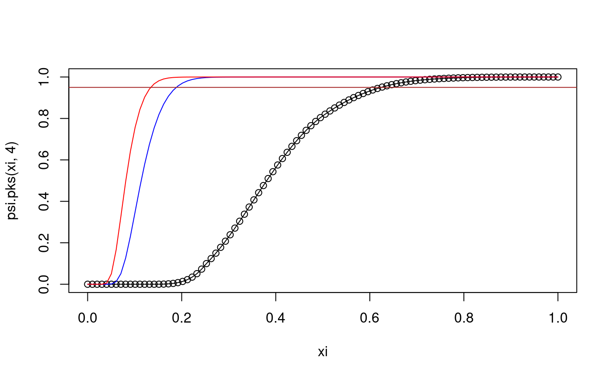
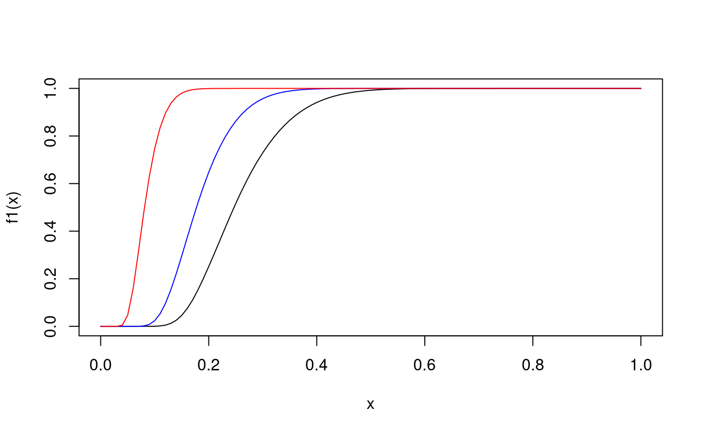

psi.pks.RdCompute the cdf of the Kolmogorov statistic for the two-sided test.
psi.pks(q, n, lower.tail = TRUE, log.p = FALSE, exact = NULL, warn = FALSE)
| q | vector of quantiles. |
|---|---|
| n | sample size. |
| lower.tail | logical; if TRUE (default) probabilities are P[X <= x], otherwise, P[X > x]. |
| log.p | logical; if TRUE, probabilities p are given as log(p). |
| exact | if TRUE use exact method, if FALSE use asymptotic aproximation, if NULL (default) use exact method for n<=100 and asymptotic for n>100. |
| warn | logical; if TRUE (default) and |
Avoid setting exact=TRUE for large values of n since the exact method can become very slow for such n.
This function is a wrapper for two undocumented low level R
functions which are used by ks.test.
numerical vector of same length as q containing the values of
the cdf of Kolmogorov's distribution.
See ks.test and, in the R sources, ks.c
# q : P(Dn < q) = 0.95 for selected values of n psi.pks(0.6239385,4)#> [1] 0.95psi.pks(0.2940753,20)#> [1] 0.95psi.pks(0.1340279,100)#> [1] 0.95psi.pks(0.04294685,1000) # asymptotic approximation#> [1] 0.95f1 <- function(x) psi.pks(x,10) # f1(x) computes cdf of D_10 f2 <- function(x) psi.pks(x,20) # f2(x) computes cdf of D_20 f3 <- function(x) psi.pks(x,100) # f3(x) computes cdf of D_100 curve(f1,0,1)